2026년 10월 23일 · 로고 초록과 학교 선택 화면을 기준으로 정돈한 클레이 UI
계정과 생기부·답변은 검수용 가상 자료입니다. 면접 중·도움·실전·종료 화면은 실제 컴포넌트에 가상 컨트롤러를 연결한 상태입니다. 실제 서버의 면접 준비 화면은 별도 표시했습니다. 유료 AI와 실제 카메라·마이크는 사용하지 않았습니다. 이미지를 누르면 원본 크기로 열립니다.
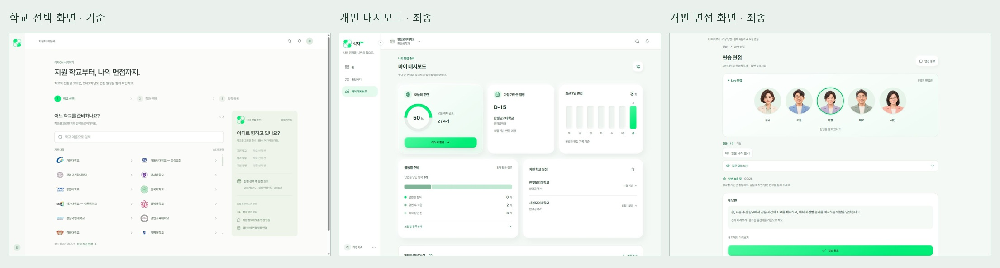
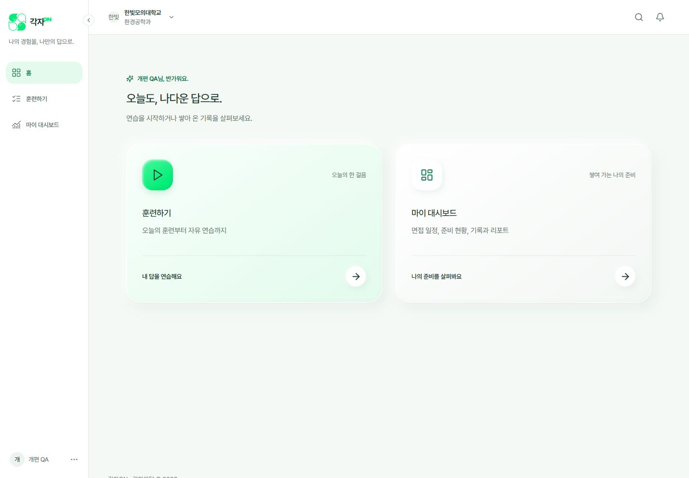
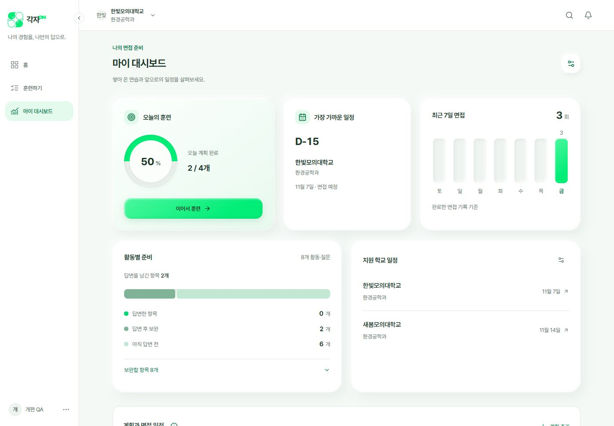
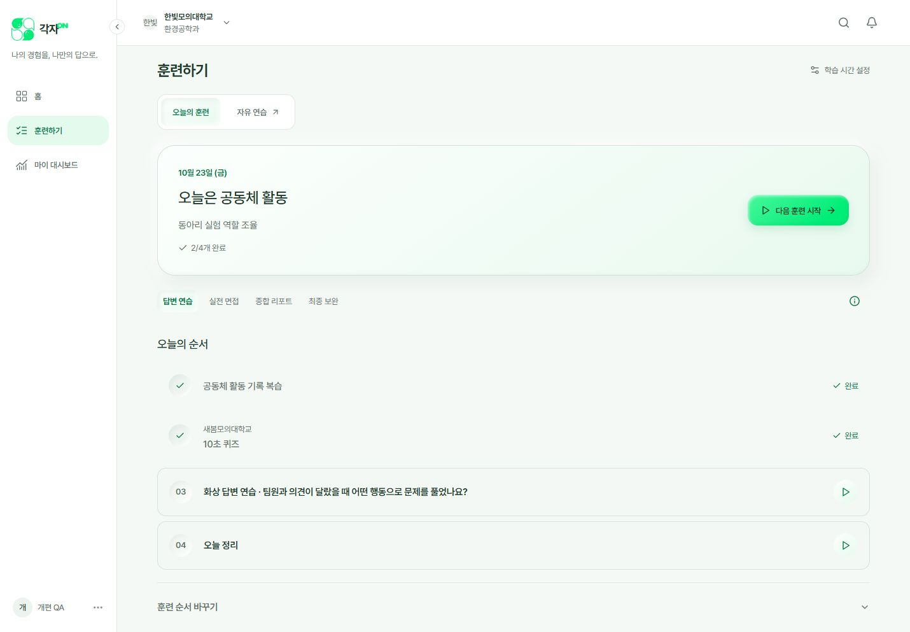
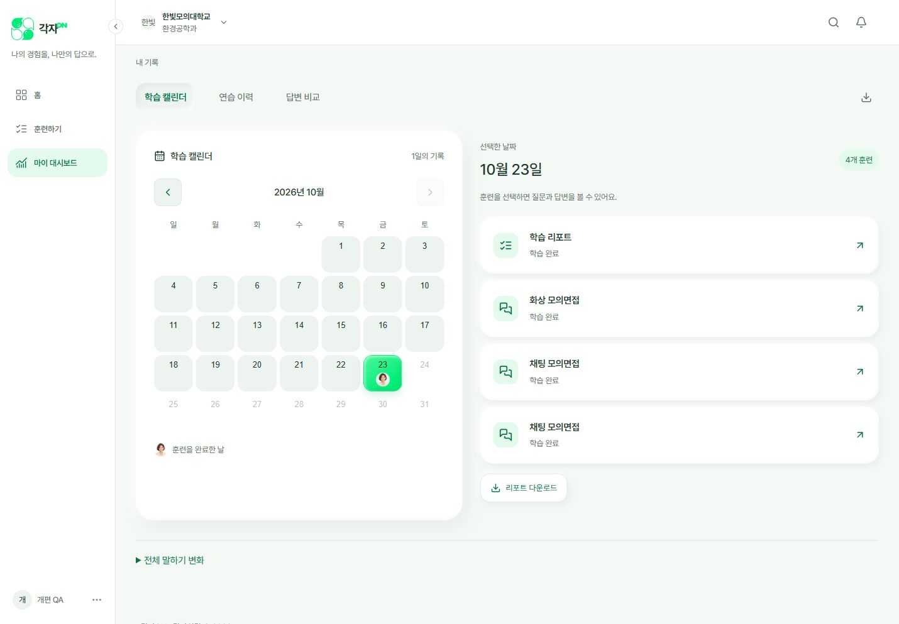
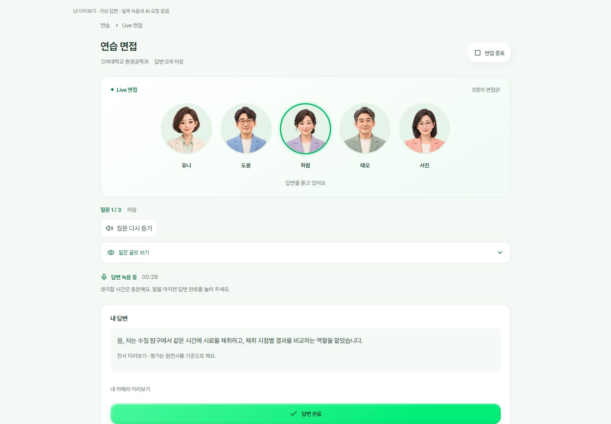
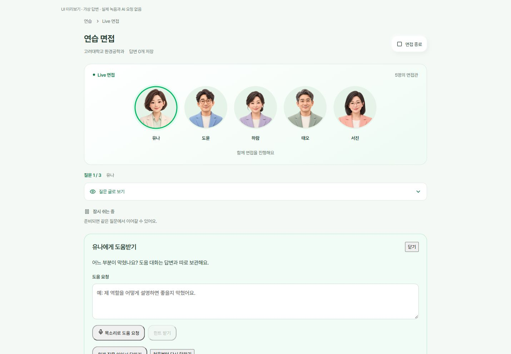
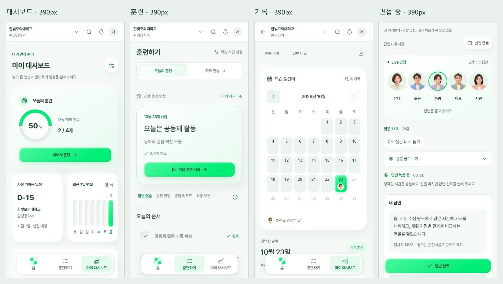
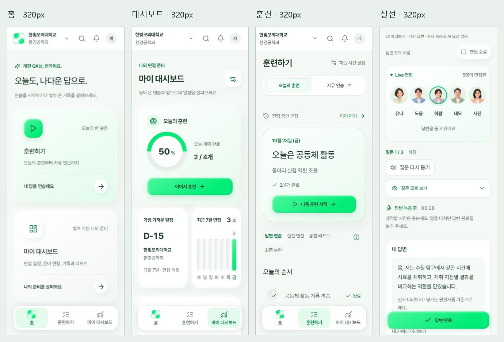
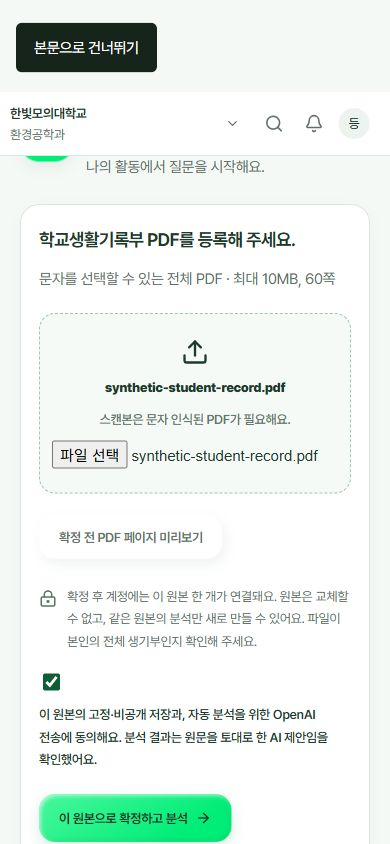
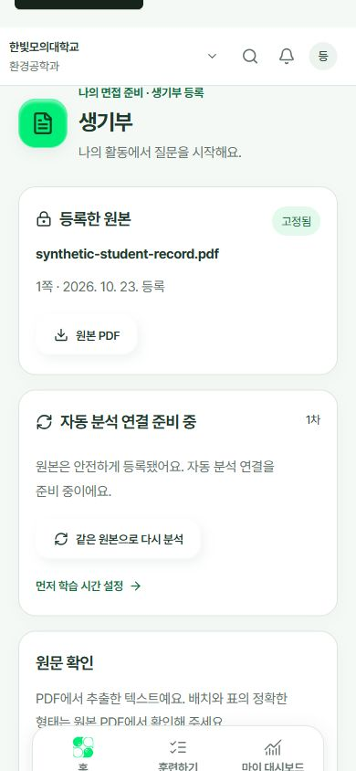
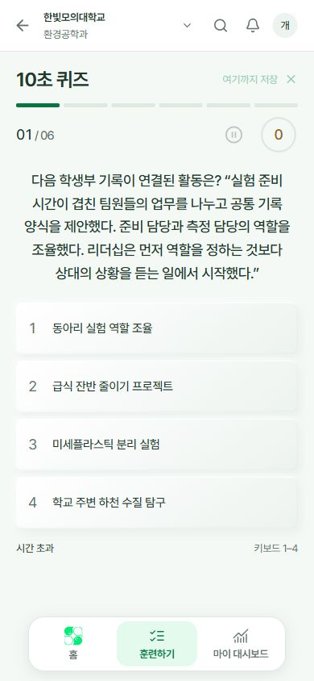
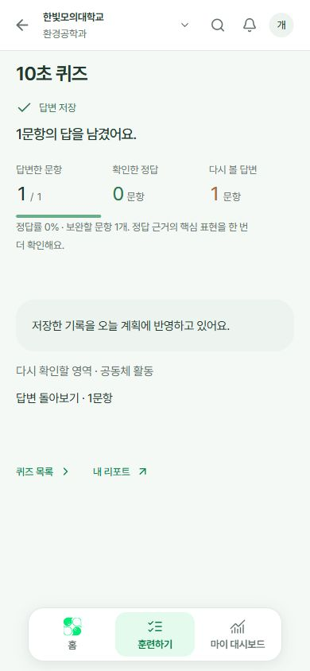
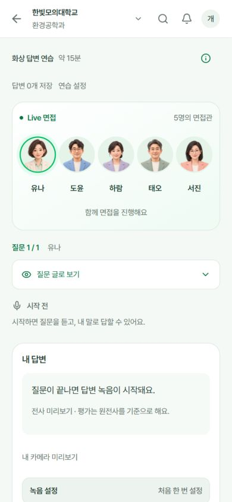
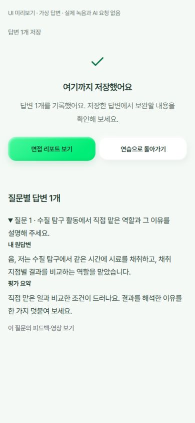